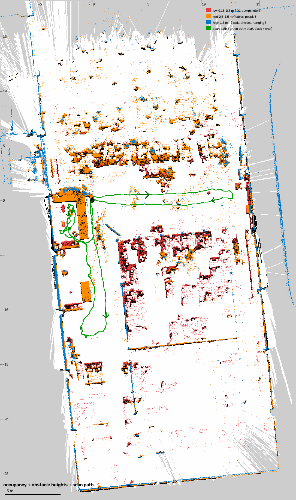

Where is
the sauna?
ClawMetry — a companion robot that answers, then walks you there. Built to be deployed, not demoed.
A spa is a maze of look-alike rooms.
Not a demo.
Something a spa could switch on.
Safe
0.5 m/s max. Dry areas only. A human stop, always.
Private
GDPR by design. Raw camera frames never leave the robot.
Resilient
Survives a power cycle with nobody around to fix it.
Edge-first
Spa Wi-Fi is bad. Nothing critical crosses it.
Small
Everything on one 8 GB Jetson Orin Nano.
Scan. Ask. Follow.
Scan
QR on the robot. No app. No account.
Ask
Voice or text, in the guest’s language.
Choose
“Take me to the Finnish sauna.”
Walk
Escort at walking pace. Progress on the phone.
Arrive
Farewell gesture. Session erased.
One door to the robot.
Phone + voice
Browser, Vapi cloud voice
Secure tunnel
Tailscale Serve, bearer token
Goals, not velocities
JSON over WebSocket
Nav2 + LiDAR map
Plans and avoids
One SDK client
systemd + watchdog
AgiBot D1 Ultra-W
Wheel-footed quadruped
No LiDAR on the robot? We brought the map.

Guests are close. Floors are wet.
Four layers, hardest first.
- Vendor firmware balance, joint limits, battery cut-off
- Speed caps bridge and Nav2, 0.5 m/s ceiling with guests
- Gateway goals only; E-STOP never reachable by voice
- A human E-STOP on the console and dashboard
Raw frames stay on the robot.
- Camera on the Orin detection runs right next to the lens
- Phone app stores nothing no cookies, no local storage
- Session gone in 10 minutes memory only, nothing persisted
- Faces masked first fail-closed filter, specified and next
Deployment-ready is the bugs you only find on real hardware.
A healthy robot reported as broken
The link flag flipped false, false, true at 19.98 Hz. We polled the SDK faster than its heartbeat.
The silent DDS wedge
Start the agent before the bridge and subscriptions match, but callbacks never fire. Restarting the agent does nothing.
A microphone error that wasn’t
Voice joins died and blamed the mic. Real cause: ICE gathering over Tailscale took 39.9 s versus 133 ms without.
Day 2: it learns who to follow.
Eyes & legs
SDK bridge, camera, YOLO26 people detection, QR and voice frontend, first LiDAR map.
A system
Gateway, Nav2 on LiDAR maps, Jetson Docker, systemd and watchdog, voice to the real robot, operator console.
Two days. A deployable stack.
We tell you what’s real. That is deployment.
Working
- SDK bridge, gestures, telemetry
- Camera over Ethernet15 fps, 0 read failures
- Voice and console to the D1over Tailscale
- systemd + watchdogpower-cycle recovery
Ready to wire
- Gateway protocolend to end with a mock robot
- Nav2 on LiDAR mapsstatic maps, not yet with guests
- Developer dashboard
- Visitor appdemo mode, strict CSP
Before guests
- Velocity arbitrationone writer to the robot at a time
- Face-masking privacy filter
- Visitor app to gateway
- Lock-on follow
From hackathon floor to spa floor.
Map the real spa’s dry zones. Wet areas stay no-go.
Arbitration, keep-out zones, privacy filter. Safety before guests.
Connect QR to gateway, run a DPIA with the spa. Real guests, supervised.
A robot a spa can switch on.